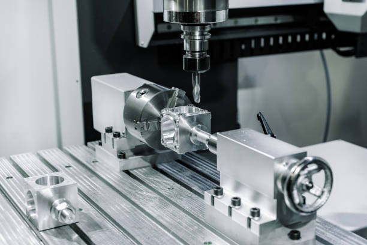
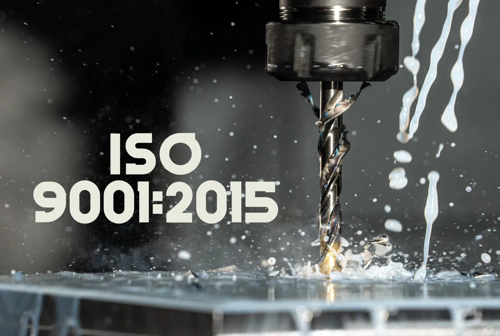
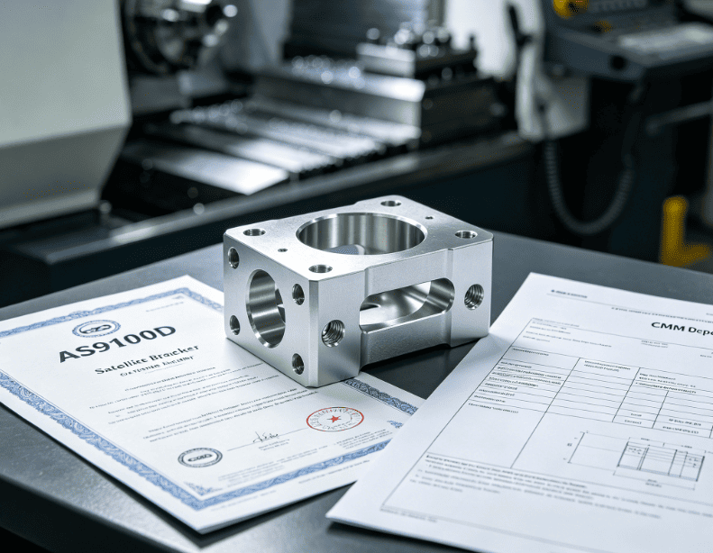
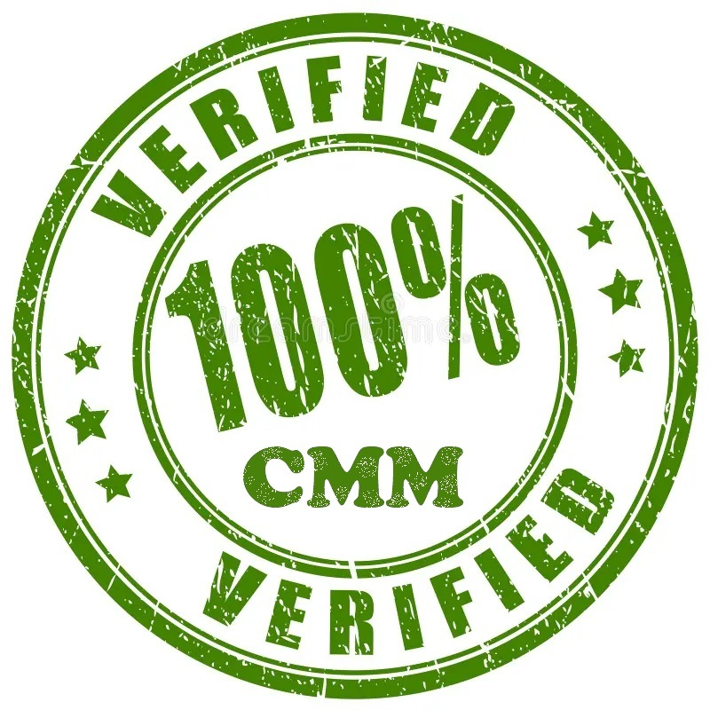
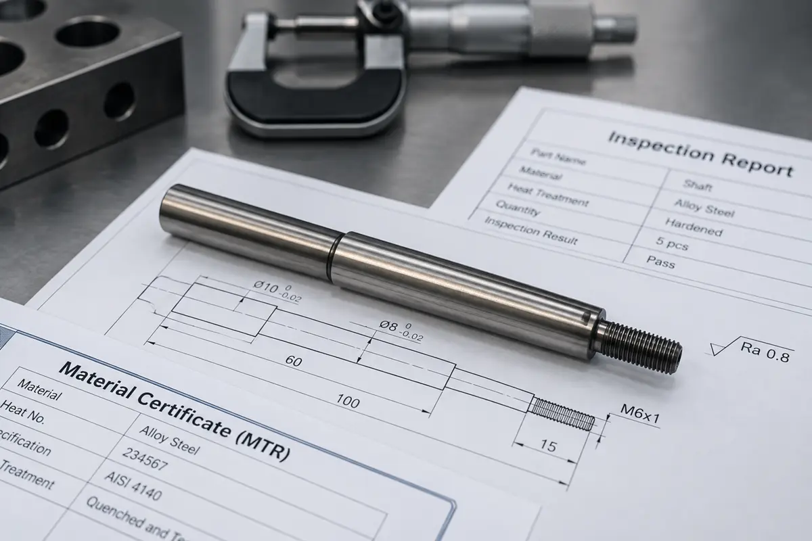

Production capacity.
Engineering control.
A focused manufacturing workflow for engineering teams that require repeatability, full traceability, and documented sub-micron quality.
CNC Machine Types & Equipment.
Continuous investment in rigid, high-precision multi-axis CNC machine tools, live-tooling lathes, and sub-micron Wire EDM systems.

5-Axis CNC Machining Centers
Continuous 5-axis simultaneous milling centers engineered for complex aerospace impellers, multi-faceted housings, and deep-pocket contoured components in a single setup.

Live-Tooling CNC Turning Lathes
Dual-spindle turn-mill centers with Y-axis rotary live tooling. Simultaneously turns, cross-drills, taps, and mills precision shafts, bushings, and rotational assemblies.

High-Velocity Vertical Mills
High-speed tapping and vertical machining centers equipped with 24,000 RPM spindles for rapid cycle times on electronic enclosures, heatsinks, and aluminum plates.

Precision Wire EDM & Surface Grinding
Sub-micron dielectric spark erosion for hardened steels (up to 65 HRC), internal sharp corners, microscopic splines, keyways, and delicate thin-walled features.
Hardware & Software Solutions & Industries & Applications.
Connecting industry-standard CAD/CAM programming and digital twin simulation with mission-critical applications across key industrial sectors.
Advanced Hardware & Software Infrastructure
💻 CAD/CAM Programming & Toolpath Engine
Mastercam 2026, HyperMill, and Siemens NX suites driving dynamic trochoidal milling, high-speed adaptive clearing, and multi-axis 5-axis simultaneous toolpaths.
🛡️ Vericut Digital Twin Kinematic Simulation
100% G-code verification on full digital machine models prior to shop-floor loading. Prevents tool collisions, gouging, and spindle stalls before chip creation.
📡 Renishaw Closed-Loop In-Process Probing
In-spindle wireless radio touch probes and non-contact laser tool setters that calibrate dynamic part offsets, inspect feature positions mid-cycle, and auto-compensate tool wear.
Quality Control & Inspection.
Documented quality assurance backed by automated CMM inspection, calibrated profilometers, and comprehensive AS9102 inspection packages.

QMS CertifiedISO 9001:2015
Certified Quality Management System ensuring systematic risk analysis, calibrated tooling, and customer satisfaction.

AS9100D StandardAS9100D Ready
Aerospace and defense quality standard with strict counterfeit material prevention and complete supply chain custody.

Metrology Lab100% CMM Verified
Every critical bore, bearing journal, and geometrical true position feature is checked with verifiable metrology data.

Full TraceabilityFull MTR Documentation
Mill test certificates documenting chemical composition, mechanical yield strength, and heat treat certification.
Why Our Services.
The core manufacturing advantages that ensure your critical components are delivered on time, within spec, and fully documented.
100% In-House CMM Metrology
Our dedicated temperature-controlled Zeiss CMM lab inspects every critical tolerance and provides full dimensional deviation reports with every batch.
24-Hour DFM & Fast Turnaround
Get instant feedback on your 3D CAD models. Our senior machinists highlight potential cost savings and tool clearances within 24 hours of submission.
99.4% On-Time Delivery Record
Disciplined shop-floor ERP capacity staging ensures machine schedules are strictly maintained, so your production lines never experience downtime.